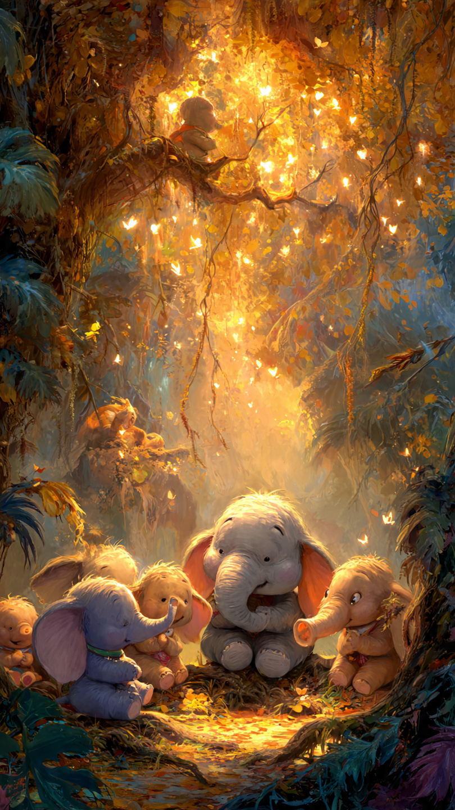

```html
🐘 الفيل الذي فقد ذاكرته في ليلة واحدة | قصص أطفال
```
في وسط السهول الواسعة، كان يعيش فيل صغير اسمه فيلو.
كان فيلو أكبر من معظم الحيوانات الصغيرة في عمره، وكان الجميع يحبه بسبب طيبته وقلبه الحنون.
لكنه كان يملك شيئًا غريبًا...
كان ينسى الأشياء بسرعة.
كان أصدقاؤه يقولون له:
"لا تنسَ موعد اللعب اليوم!"
فيبتسم ويقول:
"لن أنسى أبدًا!"
لكن بعد دقائق قليلة، كان يقف في مكان آخر ويتساءل:
"إلى أين كنت ذاهبًا؟"
وكان الجميع يضحكون بلطف.
لكن فيلو كان يشعر بالحزن أحيانًا.
فقد كان يخاف أن ينسى يومًا شيئًا مهمًا جدًا.
وفي ليلة هادئة، حدث أمر غريب.
استيقظ فيلو من نومه، ونظر حوله...
لكنه لم يتذكر أي شيء.
لم يعرف أين يعيش.
ولم يتذكر أسماء أصدقائه.
ولم يعرف حتى الطريق إلى النهر الذي كان يشرب منه كل يوم.
خرج من مكانه ببطء وهو يشعر بالقلق.
قال:
"ماذا حدث لي؟"
وبينما كان يسير في الغابة، قابل عصفورة صغيرة.
سألته:
"يا فيلو، لماذا تبدو حزينًا؟"
أجاب:
"لقد فقدت كل ذكرياتي..."
قررت العصفورة مساعدته.
وقالت:
"ربما لم تختفِ ذكرياتك تمامًا..."
"ربما تحتاج فقط إلى من يساعدك على تذكرها."
وانطلق الاثنان في رحلة داخل الغابة للبحث عن ماضي فيلو.
لكن أول مكان وصلا إليه كشف لهما سرًا لم يتوقعه أحد.
📷 الصورة رقم 1
بدأ فيلو والعصفورة الصغيرة رحلتهما داخل الغابة.
كانت العصفورة تسأله عن الأماكن التي مر بها، والأشياء التي كان يحبها، والأصدقاء الذين كان يقضي معهم وقته.
لكن فيلو لم يكن يتذكر شيئًا.
كان يشعر بالإحباط ويقول:
"ربما لن أستعيد ذكرياتي أبدًا."
لكن العصفورة ابتسمت وقالت:
"لا تستسلم، فالذكريات لا تختفي بسهولة."
وصلا أولًا إلى النهر الكبير.
عندما رأى فيلو الماء، حدث شيء غريب.
بدأ يتذكر شيئًا صغيرًا.
قال:
"هنا كنت ألعب مع أصدقائي!"
وفجأة تذكر ضحكاتهم وأصواتهم.
ثم ذهبا إلى شجرة ضخمة في وسط الغابة.
كانت هناك علامات محفورة على جذعها.
اقترب فيلو منها، فوجد أسماء أصدقائه الذين كتبوا هذه العلامات معه منذ سنوات.
بدأت ذكريات أخرى تعود إليه.
تذكر أول مرة تعلم فيها السباحة، وأول رحلة له في الغابة، والأيام الجميلة التي عاشها مع الحيوانات.
لكن بقي شيء واحد لم يتذكره...
لماذا فقد ذاكرته في تلك الليلة؟
وبينما كان يبحث عن الإجابة، وصل إلى مكان قديم لم يزره منذ فترة طويلة.
كان هناك كهف صغير خلف الشلال.
دخل فيلو والعصفورة إلى الكهف.
وفي الداخل وجدا شيئًا غريبًا...
رسومات قديمة على الجدران، وصندوقًا صغيرًا مخبأ بين الصخور.
نظر فيلو إلى الصندوق بدهشة وقال:
"أشعر أن هذا المكان يحمل آخر جزء من قصتي."
فتح الصندوق ببطء...
وكان بداخله شيء سيكشف الحقيقة كاملة.
📷 الصورة رقم 2

فتح فيلو الصندوق الصغير بحذر.
وفي داخله وجد ورقة قديمة مرسومًا عليها شكل الغابة، ومعها رسالة كتبها هو بنفسه منذ سنوات.
قرأ فيلو الرسالة بصوت مرتفع:
"إذا وجدت هذه الرسالة يومًا، فتذكر أن الذكريات ليست فقط في العقل..."
"بل في القلب أيضًا."
بدأ فيلو يتذكر ما حدث.
في تلك الليلة، كان قد حاول إنقاذ بعض الحيوانات الصغيرة من عاصفة قوية.
وبسبب التعب الشديد، فقد وعيه لفترة قصيرة.
وعندما استيقظ، كان يشعر وكأن ذكرياته اختفت.
لكن الحقيقة أن ذكرياته كانت موجودة، فقط كانت تحتاج إلى وقت حتى تعود.
شعر فيلو بالسعادة.
فقد أدرك أن ما يجعله مميزًا ليس أنه يتذكر كل شيء...
بل أنه كان دائمًا يساعد الآخرين ويصنع لحظات جميلة لا تُنسى.
عاد إلى الغابة مع العصفورة، واستقبله أصدقاؤه بفرح كبير.
قال الأرنب:
"لقد اشتقنا إليك يا فيلو!"
ابتسم الفيل الصغير وقال:
"وأنا تذكرت أن لدي أصدقاء رائعين."
ومنذ ذلك اليوم، بدأ فيلو يستخدم طرقًا جديدة لمساعدته على تذكر الأشياء.
كان يكتب الملاحظات، ويرسم اللحظات الجميلة، ويحفظ القصص التي عاشها مع أصدقائه.
لكنه لم يعد حزينًا عندما ينسى شيئًا.
فقد عرف أن أهم الذكريات تبقى دائمًا في القلب.
وأصبح فيلو يحكي للصغار:
"قد ننسى بعض التفاصيل..."
"لكننا لا ننسى الأشخاص الذين جعلوا حياتنا أجمل."
🐘💛 انتهت القصة 💛🐘
العبرة:
القيمة الحقيقية للذكريات ليست في حفظ كل شيء، بل في المشاعر الجميلة التي نتركها في قلوب الآخرين.